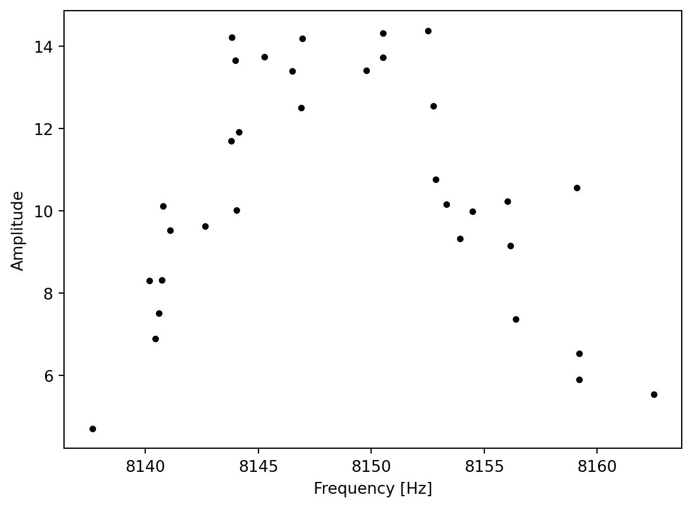

SciPy provides algorithms for optimization, integration, interpolation, eigenvalue problems, algebraic equations, differential equations, statistics and many other classes of problems. SciPy is a collection of mathematical algorithms and convenience functions built on NumPy. It adds significant power to Python by providing the user with high-level commands and classes for manipulating and visualizing data.
SciPy optimize provides functions for minimizing (or maximizing) objective functions, possibly subject to constraints. It includes solvers for nonlinear problems (with support for both local and global optimization algorithms), linear programing, constrained and nonlinear least-squares, root finding, and curve fitting.
This content is based on information from the scipy.optimize package.
The scipy.optimize package provides several commonly used optimization algorithms. A detailed listing is available in scipy.optimize (can also be found by help(scipy.optimize)).
Common functions and objects, shared across different SciPy optimize solvers, are shown in Table 2.1.
Table 2.1: Common functions and objects, shared across different SciPy optimize solvers
We will introduce unconstrained minimization of multivariate scalar functions in this chapter. The minimize function provides a common interface to unconstrained and constrained minimization algorithms for multivariate scalar functions in scipy.optimize. To demonstrate the minimization function, consider the problem of minimizing the Rosenbrock function of N variables:
The minimum value of this function is 0, which is achieved when (x_i = 1).
Note that the Rosenbrock function and its derivatives are included in scipy.optimize. The implementations shown in the following sections provide examples of how to define an objective function as well as its Jacobian and Hessian functions. Objective functions in scipy.optimize expect a numpy array as their first parameter, which is to be optimized and must return a float value. The exact calling signature must be f(x, *args), where x represents a numpy array, and args is a tuple of additional arguments supplied to the objective function.
2.1 Derivative-free Optimization Algorithms
Section 2.1.1 and Section 2.1.2 present two approaches that do not need gradient information to find the minimum. They use function evaluations to find the minimum.
2.1.1 Nelder-Mead Simplex Algorithm
The Nelder Mead is a simple local optimization algorithm. It requires only function evaluations and is a good choice for simple minimization problems. However, because it does not use any gradient evaluations, it may take longer to find the minimum. It can be devided into the following steps:
Initialize the simplex
Evaluate the function at each vertex of the simplex
Order the vertices by function value
Reflect the worst point through the centroid of the remaining points
If the reflected point is better than the second worst, replace the worst point with the reflected point
If the reflected point is worse than the worst point, try contracting the simplex
If the reflected point is better than the best point, try expanding the simplex
If none of the above steps improve the simplex, shrink the simplex towards the best point
Check for convergence
method='Nelder-Mead': In the example below, the minimize routine is used with the Nelder-Mead simplex algorithm (selected through the method parameter):
Optimization terminated successfully.
Current function value: 0.000000
Iterations: 339
Function evaluations: 571
[1. 1. 1. 1. 1.]
The simplex algorithm is probably the simplest way to minimize a well-behaved function. It requires only function evaluations and is a good choice for simple minimization problems. However, because it does not use any gradient evaluations, it may take longer to find the minimum.
2.1.2 Powell’s Method
Another optimization algorithm that needs only function calls to find the minimum is Powell’s method, which can be selected by setting the method parameter to 'powell' in the minimize function. This algorithm consists of a conjugate direction method. It performs sequential one-dimensional minimizations along each vector of the directions set, which is updated at each iteration of the main minimization loop. It can be described by the following steps:
Initialization
Minimization along each direction
Create conjugate direction
Line search along the conjugate direction
Check for convergence
Example 2.1 To demonstrate how to supply additional arguments to an objective function, let’s consider minimizing the Rosenbrock function with an additional scaling factor \(a\) and an offset \(b\):
\[
f(J, a, b) = \sum_{i=1}^{N-1} a (x_{i+1} - x_i^2)^2 + (1 - x_i)^2 + b
\]
You can achieve this using the minimize routine with the example parameters \(a=0.5\) and \(b=1\):
Optimization terminated successfully.
Current function value: 1.000000
Iterations: 319
Function evaluations: 525
[1. 1. 1. 1. 0.99999999]
As an alternative to using the args parameter of minimize, you can wrap the objective function in a new function that accepts only x. This approach is also useful when it is necessary to pass additional parameters to the objective function as keyword arguments.
def rosen_with_args(x, a, *, b): # b is a keyword-only argumentreturnsum(a * (x[1:] - x[:-1]**2.0)**2.0+ (1- x[:-1])**2.0) + bdef wrapped_rosen_without_args(x):return rosen_with_args(x, 0.5, b=1.) # pass in `a` and `b`x0 = np.array([1.3, 0.7, 0.8, 1.9, 1.2])res = minimize(wrapped_rosen_without_args, x0, method='nelder-mead', options={'xatol': 1e-8,})print(res.x)
2.2.1 An Introductory Example: Broyden-Fletcher-Goldfarb-Shanno Algorithm (BFGS)
This section introduces an optimization algorithm that uses gradient information to find the minimum. The Broyden-Fletcher-Goldfarb-Shanno (BFGS) algorithm (selected by setting method='BFGS') is an optimization algorithm that aims to converge quickly to the solution. This algorithm uses the gradient of the objective function. If the gradient is not provided by the user, it is estimated using first-differences. The BFGS method typically requires fewer function calls compared to the simplex algorithm, even when the gradient needs to be estimated.
Example 2.2 (BFGS) To demonstrate the BFGS algorithm, let’s use the Rosenbrock function again. The gradient of the Rosenbrock function is a vector described by the following mathematical expression:
This Jacobian matrix provides information about how small changes in the input variables \(x_1\) and \(x_2\) affect the corresponding changes in each component of the output vector.
2.2.5 Hessian Matrix
The Hessian matrix \(H(J)\) for a scalar function \(f(J)\) is defined as:
The Hessian matrix consists of the second order derivatives of the function. It provides information about the local curvature of the function with respect to changes in the input variables.
Example 2.4 (Hessian matrix) Consider a scalar-valued function: \[f(J) = x_1^2 + 2x_2^2 + \sin(x_1 x_2)\]
The Hessian matrix of this scalar-valued function is the matrix of its second-order partial derivatives with respect to the input variables: \[H(J) = \begin{bmatrix} \frac{\partial^2 f}{\partial x_1^2} & \frac{\partial^2 f}{\partial x_1 \partial x_2} \\ \frac{\partial^2 f}{\partial x_2 \partial x_1} & \frac{\partial^2 f}{\partial x_2^2} \end{bmatrix}\]
Let’s compute the second-order partial derivatives and construct the Hessian matrix:
In optimization, the goal is to find the minimum or maximum of a function. Gradient-based optimization methods utilize information about the gradient (or derivative) of the function to guide the search for the optimal solution. This is particularly useful when dealing with complex, high-dimensional functions where an exhaustive search is impractical.
The gradient descent method can be divided in the following steps:
Initialize: start with an initial guess for the parameters of the function to be optimized.
Compute Gradient: Calculate the gradient (partial derivatives) of the function with respect to each parameter at the current point. The gradient indicates the direction of the steepest increase in the function.
Update Parameters: Adjust the parameters in the opposite direction of the gradient, scaled by a learning rate. This step aims to move towards the minimum of the function:
\(x_{k+1} = x_k - \alpha \times \nabla f(x_{k})\)
\(x_{x}\) is current parameter vector or point in the parameter space.
\(\alpha\) is the learning rate, a positive scalar that determines the step size in each iteration.
\(\nabla f(x)\) is the gradient of the objective function.
Iterate: Repeat the above steps until convergence or a predefined number of iterations. Convergence is typically determined when the change in the function value or parameters becomes negligible.
Example 2.5 (Gradient Descent) We consider a simple quadratic function as an example: \[
f(x) = x^2 + 4x + y^2 + 2y + 4.
\]
We’ll use gradient descent to find the minimum of this function.
import numpy as npimport matplotlib.pyplot as pltfrom mpl_toolkits.mplot3d import Axes3D# Define the quadratic functiondef quadratic_function(x, y):return x**2+4*x + y**2+2*y +4# Define the gradient of the quadratic functiondef gradient_quadratic_function(x, y): grad_x =2*x +4 grad_y =2*y +2return np.array([grad_x, grad_y])# Gradient Descent for optimization in 2Ddef gradient_descent(initial_point, learning_rate, num_iterations): points = [np.array(initial_point)]for _ inrange(num_iterations): current_point = points[-1] gradient = gradient_quadratic_function(*current_point) new_point = current_point - learning_rate * gradient points.append(new_point)return points# Visualization of optimization process with 3D surface and consistent arrow sizesdef plot_optimization_process_3d_consistent_arrows(points): fig = plt.figure(figsize=(10, 8)) ax = fig.add_subplot(111, projection='3d') x_vals = np.linspace(-10, 2, 100) y_vals = np.linspace(-10, 2, 100) X, Y = np.meshgrid(x_vals, y_vals) Z = quadratic_function(X, Y) ax.plot_surface(X, Y, Z, cmap='viridis', alpha=0.6) ax.scatter(*zip(*points), [quadratic_function(*p) for p in points], c='red', label='Optimization Trajectory')for i inrange(len(points) -1): x, y = points[i] dx, dy = points[i +1] - points[i] dz = quadratic_function(*(points[i +1])) - quadratic_function(*points[i]) gradient_length =0.5 ax.quiver(x, y, quadratic_function(*points[i]), dx, dy, dz, color='blue', length=gradient_length, normalize=False, arrow_length_ratio=0.1) ax.set_title('Gradient-Based Optimization with 2D Quadratic Function') ax.set_xlabel('x') ax.set_ylabel('y') ax.set_zlabel('f(x, y)') ax.legend() plt.show()# Initial guess and parametersinitial_guess = [-9.0, -9.0]learning_rate =0.2num_iterations =10# Run gradient descent in 2D and visualize the optimization process with 3D surface and consistent arrow sizestrajectory = gradient_descent(initial_guess, learning_rate, num_iterations)plot_optimization_process_3d_consistent_arrows(trajectory)
2.2.7 Newton Method
Initialization: Start with an initial guess for the optimal solution: \(x_0\).
Iteration: Repeat the following three steps until convergence or a predefined stopping criterion is met:
Calculate the gradient (\(\nabla\)) and the Hessian matrix (\(\nabla^2\)) of the objective function at the current point: \[\nabla f(x_k) \quad \text{and} \quad \nabla^2 f(x_k)\]
Update the current solution using the Newton-Raphson update formula \[
x_{k+1} = x_k - [\nabla^2 f(x_k)]^{-1} \nabla f(x_k),
\] where
* $\nabla f(x_k)$ is the gradient (first derivative) of the objective function with respect to the variable $x$, evaluated at the current solution $x_k$.
\(\nabla^2 f(x_k)\): The Hessian matrix (second derivative) of the objective function with respect to \(x\), evaluated at the current solution \(x_k\).
\(x_k\): The current solution or point in the optimization process.
\(\nabla^2 f(x_k)]^{-1}\): The inverse of the Hessian matrix at the current point, representing the approximation of the curvature of the objective function.
\(x_{k+1}\): The updated solution or point after applying the Newton-Raphson update.
Check for convergence.
Example 2.6 (Newton Method) We want to optimize the Rosenbrock function and use the Hessian and the Jacobian (which is equal to the gradient vector for scalar objective function) to the minimize function.
def rosenbrock(x):return100* (x[1] - x[0]**2)**2+ (1- x[0])**2def rosenbrock_gradient(x): dfdx0 =-400* x[0] * (x[1] - x[0]**2) -2* (1- x[0]) dfdx1 =200* (x[1] - x[0]**2)return np.array([dfdx0, dfdx1])def rosenbrock_hessian(x): d2fdx0 =1200* x[0]**2-400* x[1] +2 d2fdx1 =-400* x[0]return np.array([[d2fdx0, d2fdx1], [d2fdx1, 200]])def classical_newton_optimization_2d(initial_guess, tol=1e-6, max_iter=100): x = initial_guess.copy()for i inrange(max_iter): gradient = rosenbrock_gradient(x) hessian = rosenbrock_hessian(x)# Solve the linear system H * d = -g for d d = np.linalg.solve(hessian, -gradient)# Update x x += d# Check for convergenceif np.linalg.norm(gradient, ord=np.inf) < tol:breakreturn x# Initial guessinitial_guess_2d = np.array([0.0, 0.0])# Run classical Newton optimization for the 2D Rosenbrock functionresult_2d = classical_newton_optimization_2d(initial_guess_2d)# Print the resultprint("Optimal solution:", result_2d)print("Objective value:", rosenbrock(result_2d))
Optimal solution: [1. 1.]
Objective value: 0.0
2.2.8 BFGS-Algorithm
BFGS is an optimization algorithm designed for unconstrained optimization problems. It belongs to the class of quasi-Newton methods and is known for its efficiency in finding the minimum of a smooth, unconstrained objective function.
2.2.9 Procedure:
Initialization:
Start with an initial guess for the parameters of the objective function.
Initialize an approximation of the Hessian matrix (inverse) denoted by \(H\).
Iterative Update:
At each iteration, compute the gradient vector at the current point.
Update the parameters using the BFGS update formula, which involves the inverse Hessian matrix approximation, the gradient, and the difference in parameter vectors between successive iterations: \[x_{k+1} = x_k - H_k^{-1} \nabla f(x_k).\]
Update the inverse Hessian approximation using the BFGS update formula for the inverse Hessian. \[H_{k+1} = H_k + \frac{\Delta x_k \Delta x_k^T}{\Delta x_k^T \Delta g_k} - \frac{H_k g_k g_k^T H_k}{g_k^T H_k g_k},\] where:
\(x_k\) and \(x_{k+1}\) are the parameter vectors at the current and updated iterations, respectively.
\(\nabla f(x_k)\) is the gradient vector at the current iteration.
\(\Delta x_k = x_{k+1} - x_k\) is the change in parameter vectors.
\(\Delta g_k = \nabla f(x_{k+1}) - \nabla f(x_k)\) is the change in gradient vectors.
Convergence:
Repeat the iterative update until the optimization converges. Convergence is typically determined by reaching a sufficiently low gradient or parameter change.
Example 2.7 (BFGS for Rosenbrock)
import numpy as npfrom scipy.optimize import minimize# Define the 2D Rosenbrock functiondef rosenbrock(x):return (1- x[0])**2+100* (x[1] - x[0]**2)**2# Initial guessinitial_guess = np.array([0.0, 0.0])# Minimize the Rosenbrock function using BFGSminimize(rosenbrock, initial_guess, method='BFGS')
Global optimization aims to find the global minimum of a function within given bounds, in the presence of potentially many local minima. Typically, global minimizers efficiently search the parameter space, while using a local minimizer (e.g., minimize) under the hood.
2.3.1 Local vs Global Optimization
2.3.1.1 Local Optimizater:
Seeks the optimum in a specific region of the search space
Tends to exploit the local environment, to find solutions in the immediate area
Highly sensitive to initial conditions; may converge to different local optima based on the starting point
Often computationally efficient for low-dimensional problems but may struggle with high-dimensional or complex search spaces
Commonly used in situations where the objective is to refine and improve existing solutions
2.3.1.2 Global Optimizer:
Explores the entire search space to find the global optimum
Emphasize exploration over exploitation, aiming to search broadly and avoid premature convergence to local optima
Aim to mitigate the risk of premature convergence to local optima by employing strategies for global exploration
Less sensitive to initial conditions, designed to navigate diverse regions of the search space
Equipped to handle high-dimensional and complex problems, though computational demands may vary depending on the specific algorithm
Preferred for applications where a comprehensive search of the solution space is crucial, such as in parameter tuning, machine learning, and complex engineering design
Example 2.8 (Global Optimizers in SciPy) SciPy contains a number of good global optimizers. Here, we’ll use those on the same objective function, namely the (aptly named) eggholder function:
We now use the global optimizers to obtain the minimum and the function value at the minimum. We’ll store the results in a dictionary so we can compare different optimization results later.
from scipy import optimizeresults =dict()results['shgo'] = optimize.shgo(eggholder, bounds)results['shgo']
All optimizers return an OptimizeResult, which in addition to the solution contains information on the number of function evaluations, whether the optimization was successful, and more. For brevity, we won’t show the full output of the other optimizers:
This function implements the Dual-Annealing optimization, which is a variant of the famous simulated annealing optimization.
Simulated Annealing is a probabilistic optimization algorithm inspired by the annealing process in metallurgy. The algorithm is designed to find a good or optimal global solution to a problem by exploring the solution space in a controlled and adaptive manner.
Annealing in Metallurgy
Simulated Annealing draws inspiration from the physical process of annealing in metallurgy. Just as metals are gradually cooled to achieve a more stable state, Simulated Annealing uses a similar approach to explore solution spaces in the digital world.
Heating Phase: In metallurgy, a metal is initially heated to a high temperature. At this elevated temperature, the atoms or molecules in the material become more energetic and chaotic, allowing the material to overcome energy barriers and defects.
Analogy Simulated Annealing (Exploration Phase): In Simulated Annealing, the algorithm starts with a high “temperature,” which encourages exploration of the solution space. At this stage, the algorithm is more likely to accept solutions that are worse than the current one, allowing it to escape local optima and explore a broader region of the solution space.
Cooling Phase: The material is then gradually cooled at a controlled rate. As the temperature decreases, the atoms or molecules start to settle into more ordered and stable arrangements. The slow cooling rate is crucial to avoid the formation of defects and to ensure the material reaches a well-organized state.
Analogy Simulated Annealing (Exploitation Phase): As the algorithm progresses, the temperature is gradually reduced over time according to a cooling schedule. This reduction simulates the cooling process in metallurgy. With lower temperatures, the algorithm becomes more selective and tends to accept only better solutions, focusing on refining and exploiting the promising regions discovered during the exploration phase.
2.3.2.1 Key Concepts
Temperature: The temperature is a parameter that controls the likelihood of accepting worse solutions. We start with a high temperature, allowing the algorithm to explore the solution space braodly. The temperature decreases with the iterations of the algorithm.
Cooling Schedule: The temperature parameter is reduced according to this schedule. The analogy to the annealing of metals: a slower cooling rate allows the material to reach a more stable state.
Neighborhood Exploration: At each iteration, the algorithm explores the neighborhood of the current solution. The neighborhood is defined by small perturbations or changes to the current solution.
Acceptance Probability: The algorithm evaluates the objective function for the new solution in the neighborhood. If the new solution is better, it is accepted. If the new solution is worse, it may still be accepted with a certain probability. This probability is determined by both the difference in objective function values and the current temperature.
Termination Criterion: The algorithm continues iterations until a termination condition is met. This could be a fixed number of iterations, reaching a specific temperature threshold, or achieving a satisfactory solution.
2.3.2.2 Steps
1. Initialization: Set an initial temperature (\(T_{0}\)) and an initial solution (\(f(x_{0})\)). The temperature is typically set high initially to encourage exploration.
2. Generate a Neighbor: Perturb the current solution to generate a neighboring solution. The perturbation can be random or follow a specific strategy.
3. Evaluate the Neighbor: Evaluate the objective function for the new solution in the neighborhood.
4. Accept or Reject the Neighbor: + If the new solution is better (lower cost for minimization problems or higher for maximization problems), accept it as the new current solution. + If the new solution is worse, accept it with a probability determined by an acceptance probability function as mentioned above. The probability is influenced by the difference in objective function values and the current temperature.
5. Cooling: Reduce the temperature according to a cooling schedule. The cooling schedule defines how fast the temperature decreases over time. Common cooling schedules include exponential or linear decay.
6. Termination Criterion: Repeat the iterations (2-5) until a termination condition is met. This could be a fixed number of iterations, reaching a specific temperature threshold, or achieving a satisfactory solution.
2.3.2.3 Scipy Implementation of the Dual Annealing Algorithm
In Scipy, we utilize the Dual Annealing optimizer, an extension of the simulated annealing algorithm that is versatile for both discrete and continuous problems.
import numpy as npimport matplotlib.pyplot as pltfrom scipy.optimize import dual_annealingdef rastrigin_function(x):return20+ x[0]**2-10* np.cos(2* np.pi * x[0]) + x[1]**2-10* np.cos(2* np.pi * x[1])# Define the Rastrigin function for visualizationdef rastrigin_visualization(x, y):return20+ x**2-10* np.cos(2* np.pi * x) + y**2-10* np.cos(2* np.pi * y)# Create a meshgrid for visualizationx_vals = np.linspace(-10, 10, 100)y_vals = np.linspace(-10, 10, 100)x_mesh, y_mesh = np.meshgrid(x_vals, y_vals)z_mesh = rastrigin_visualization(x_mesh, y_mesh)# Visualize the Rastrigin functionplt.figure(figsize=(10, 8))contour = plt.contour(x_mesh, y_mesh, z_mesh, levels=50, cmap='viridis')plt.colorbar(contour, label='Rastrigin Function Value')plt.title('Visualization of the 2D Rastrigin Function')# Optimize the Rastrigin function using dual annealingresult = dual_annealing(func = rastrigin_function, x0=[5.0,3.0], #Initial Guess bounds= [(-10, 10), (-10, 10)], initial_temp =5230, #Intial Value for temperature restart_temp_ratio =2e-05, #Temperature schedule seed=42)# Plot the optimized pointoptimal_x, optimal_y = result.xplt.plot(optimal_x, optimal_y, 'ro', label='Optimal Point')# Set labels and legendplt.xlabel('X')plt.ylabel('Y')plt.legend()# Show the plotplt.show()# Display the optimization resultprint("Optimal parameters:", result.x)print("Minimum value of the Rastrigin function:", result.fun)
Optimal parameters: [-4.60133247e-09 -4.31928660e-09]
Minimum value of the Rastrigin function: 7.105427357601002e-15
2.3.3 Differential Evolution
Differential Evolution is an algorithm used for finding the global minimum of multivariate functions. It is stochastic in nature (does not use gradient methods), and can search large areas of candidate space, but often requires larger numbers of function evaluations than conventional gradient based techniques.
Differential Evolution (DE) is a versatile and global optimization algorithm inspired by natural selection and evolutionary processes. Introduced by Storn and Price in 1997, DE mimics the survival-of-the-fittest principle by evolving a population of candidate solutions through iterative mutation, crossover, and selection operations. This nature-inspired approach enables DE to efficiently explore complex and non-linear solution spaces, making it a widely adopted optimization technique in diverse fields such as engineering, finance, and machine learning.
2.3.4 Procedure
The procedure boils down to the following steps:
Initialization:
Create a population of candidate solutions randomly within the specified search space.
Mutation:
For each individual in the population, select three distinct individuals (vectors) randomly.
Generate a mutant vector V by combining these three vectors with a scaling factor.
Crossover:
Perform the crossover operation between the target vector U and the mutant vector V. Information from both vectors is used to create a trial vector U´
Cross-Over Strategies in DE
There are several crossover strategies in the literature. Two examples are:
Binominal Crossover:
In this strategy, each component of the trial vector is selected from the mutant vector with a probability equal to the crossover rate (\(CR\)). This means that each element of the trial vector has an independent probability of being replaced by the corresponding element of the mutant vector.
In exponential crossover, the trial vector is constructed by selecting a random starting point and copying elements from the mutant vector with a certain probability. The probability decreases exponentially with the distance from the starting point. This strategy introduces a correlation between neighboring elements in the trial vector.
Selection:
Evaluate the fitness of the trial vector obtained from the crossover.
Replace the target vector with the trial vector if its fitness is better.
Termination:
Repeat the mutation, crossover, and selection steps for a predefined number of generations or until convergence criteria are met.
Result:
The algorithm returns the best-found solution after the specified number of iterations.
The key parameters in DE include the population size, crossover probability, and the scaling factor. Tweak these parameters based on the characteristics of the optimization problem for optimal performance.
import numpy as npimport matplotlib.pyplot as pltfrom scipy.optimize import minimize# Define the Rastrigin functiondef rastrigin(x): A =10return A *len(x) +sum([(xi**2- A * np.cos(2* np.pi * xi)) for xi in x])# Create a grid for visualizationx_vals = np.linspace(-5.12, 5.12, 100)y_vals = np.linspace(-5.12, 5.12, 100)X, Y = np.meshgrid(x_vals, y_vals)Z = rastrigin(np.vstack([X.ravel(), Y.ravel()]))# Reshape Z to match the shape of X and YZ = Z.reshape(X.shape)# Plot the Rastrigin functionplt.contour(X, Y, Z, levels=50, cmap='viridis', label='Rastrigin Function')# Initial guess (starting point for the optimization)initial_guess = (4,3,4,2)# Define the bounds for each variable in the Rastrigin functionbounds = [(-5.12, 5.12)] *4# 4D problem, each variable has bounds (-5.12, 5.12)# Run the minimize functionresult = minimize(rastrigin, initial_guess, bounds=bounds, method='L-BFGS-B')# Extract the optimal solutionoptimal_solution = result.x# Plot the optimal solutionplt.scatter(optimal_solution[0], optimal_solution[1], color='red', marker='x', label='Optimal Solution')# Add labels and legendplt.title('Optimization of Rastrigin Function with Minimize')plt.xlabel('Variable 1')plt.ylabel('Variable 2')plt.legend()# Show the plotplt.show()# Print the optimization resultprint("Optimal Solution:", optimal_solution)print("Optimal Objective Value:", result.fun)
DIviding RECTangles (DIRECT) is a deterministic global optimization algorithm capable of minimizing a black box function with its variables subject to lower and upper bound constraints by sampling potential solutions in the search space
2.3.7 SHGO
SHGO stands for “simplicial homology global optimization”. It is considered appropriate for solving general purpose NLP and blackbox optimization problems to global optimality (low-dimensional problems).
2.3.8 Basin-hopping
Basin-hopping is a two-phase method that combines a global stepping algorithm with local minimization at each step. Designed to mimic the natural process of energy minimization of clusters of atoms, it works well for similar problems with “funnel-like, but rugged” energy landscapes
2.4 Project: One-Mass Oscillator Optimization
import numpy as npimport pandas as pdimport matplotlib.pyplot as pltfrom scipy.optimize import minimize
2.4.1 Introduction
In this project, you will apply various optimization algorithms to fit a one-mass oscillator model to real-world data. The objective is to minimize the sum of the squared residuals between the model predictions and the observed amplitudes of a one-mass oscillator system across different frequencies.
2.4.2 One-Mass Oscillator Model
The one-mass oscillator is characterized by the following equation, representing the amplitudes of the system:
Here, \(\omega\) represents the angular frequency of the system, \(\nu\) is the ratio of the excitation frequency to the natural frequency, i.e., \[
\nu = \frac{\omega_{\text{err}}}{\omega_{\text{eig}}},
\]\(D\) is the damping ratio, and \(F\) is the force applied to the system.
The goal of the project is to determine the optimal values for the parameters \(\omega_{\text{eig}}\), \(D\), and \(F\) that result in the best fit of the one-mass oscillator model to the observed amplitudes.
2.4.3 The Real-World Data
There are two different measurements. J represents the measured frequencies, and N represents the measured amplitudes.
# plot the data, i.e., the measured amplitudes as a function of the measured frequenciesplt.scatter(df1["J"], df1["N"], color="black", label="Spektralpunkte", zorder=5, s=10)plt.xlabel("Frequency [Hz]")plt.ylabel("Amplitude")plt.show()

Note: Low amplitudes distort the fit and are negligible therefore we define a lower threshold for N.
def one_mass_oscillator(params, Oerr) -> np.ndarray:# returns amplitudes of the system# Defines the model of a one mass oscilator Oeig, D, F = params nue = Oerr / Oeig V = F / (np.sqrt((1- nue**2) **2+ (4* D**2* nue**2)))return V
def objective_function(params, Oerr, amplitudes) -> np.ndarray:# objective function to compare calculated and real amplitudesreturn np.sum((amplitudes - one_mass_oscillator(params, Oerr)) **2)
We define the options for the optimzer and start the optimization process:


{kind=link}